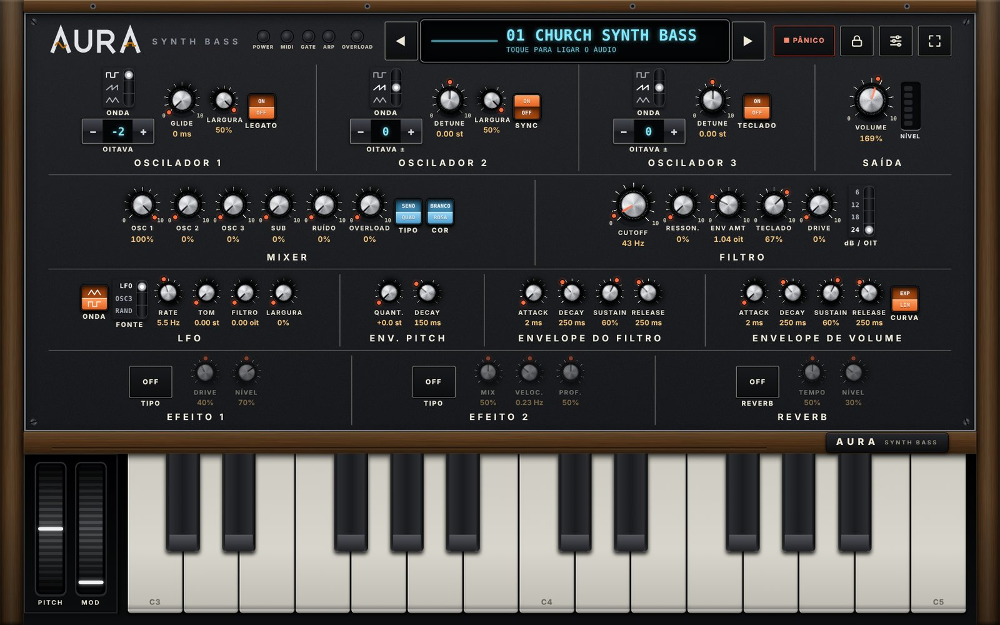

Três osciladores, filtro de 24 dB, efeitos, arpejador e controle total por MIDI. Para Windows e Mac, com plugin VST3 e AU incluídos.

3 osciladores, sub, ruído, filtro de 24 dB com ressonância e drive, e envelopes completos.
Botão de pânico, cadeado de tela, setlist com Program Change e preset de emergência.
Distorção, fuzz, chorus, phaser, delay, reverb e arpejador sincronizado ao andamento.
USB e Bluetooth. Mapeie qualquer botão do controlador a qualquer knob em segundos.
Programa independente e plugins VST3 (Windows e Mac) e AU (Mac) para Reaper e outras DAWs.
Manual em português com imagens, para quem nunca usou um sintetizador.
Ao abrir pela primeira vez, o AURA funciona por 15 dias com todos os recursos. Depois, insira a chave de ativação recebida na compra.
Uma chave de ativação pessoal. Use em até 3 aparelhos seus (por exemplo, notebook, tablet e PC de palco).
Atualizações da versão 1 incluídas.
Não gostou? Reembolso integral em até 7 dias.
Sim. Cada chave vale para até 3 aparelhos seus. Para trocar de aparelho, desative um deles dentro do AURA (Ativação → Desativar) e ative no novo.
O AURA pede a chave de ativação. Seus presets continuam salvos.
Só para ativar e, de tempos em tempos, confirmar a licença. Depois o AURA funciona offline por até 30 dias entre as confirmações.
Se aparecer o aviso, confirme que o arquivo veio desta página. No Windows: “Mais informações” → “Executar assim mesmo”. No Mac: clique com o botão direito no instalador → “Abrir”.
Qualquer controlador MIDI USB compatível com o seu sistema. Há também suporte a Bluetooth MIDI em computadores que oferecem esse recurso.